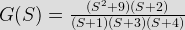
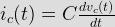
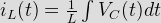

- A system with transfer function G(S) = {(S2 + 9) (S + 2)}{(S + 1) (S + 3) (S + 4)} is exited by sinω t. The steady state output of the system output of the system is zero at

 = \frac{( - \omega^2 + 9) (j \omega + 2) {(j \omega + 1) (j \omega + 3) (j \omega + 4)")
The steady dtate output will be zero if | G (jΩ) | = 0
Or, - Ω2 + 9 =0
So, Ω = 3 rad/sec. - The average power delivered to an impedence (4 – j3) Ω by current 5 cos(100πt + 100) A is
In phasor form,
Z = 4 – j3 = 5 ∠ - 36.86 ° Ω
I = 5 ∠ 100 ° A.
Average power delivered,
P avg = ½ × | I | 2 z Cosθ = ½ × 25 × 5 Cos 36.86 ° = 50 W. - The voltage applied to a circuit is 100 &radiac; 2 cos(100 π t) volts and the circuit draws a current of 10 &radiac; 2 sin(100πt + π/4) Amps. Taking the voltage as the reference phasor, the phasor representation of the current in amperes is
Voltage in time domain,
V(t) = 100 &radiac; 2 cos(100π t)
Current in the domains,
i(t) = 10&radiac; 2 sin(100πt + π/4)
Applying the following trigometric identity
Sin (Φ) = Cos(&phi – 90 °)
So, i(t) = 10&radiac; 2 cos(100 πt + π/4 - π/2) = 10&radiac; 2 cos(100 πt - π/4)
In phasor form, I = 10&radiac 2/&radiac; 2 ∠ - π4. - How many 200 W/220 V in candescent lamps connected in series would consume the same total power as a single 100 W/200 V incandescent lamp?
Resistance of bulb rated 200 W/220 V is
R1 = V2/P1 = 2420 hr.
Resistance of 100 W/220 V lamp is
RT = (220)2/100 = 484 ohm.
To connect is series
RT = n × R1 n = 2. - A 3 V DC supply with an integral resistance of 2 ohm supplies a passive non-linear resistance characterized by the reaction VNL = INL2. The power dissipated in the nonlinear resistor is
Applying KVL,
3 – 2 × INL2 = VNL
Or, INL2 = 1
Or, INL = 1 A
So, VNL = (1)2 = 1 V.
Power dissipated in the non-liner resistance,
P = VNL INL. - The parameter type representation of the relevant two port parameters that describe the circuit shown are
Given two port nework can be describe in terms h parameter only.
- An ideal capacitor is charged to a voltage Vo and connected at t=o across an ideal inductor L ( The circuit now consist of a capacitor and inductor only). If we let Ωo = 1/&radiac;(LC), the voltage across the capacitor at time t > o is given by
Hints: Capacitor current is given as

So, IC(s) = CsV (s) – v(0)
Where V(o) = initial voltage.
Current in inductor

So, IL(s) = V(s)/Ls
For t > 0, applying KCL (in s-domain)
Ic(s) + IL(s) = 0
 = V_0 \frac{s}{s^2 + \omega_0^2}As ω<sub>0</sub><sup>2</sup> = 1/(LC)So, V(t) = V<sub>0</sub> cosω<sub>o</sub>t, t > 0.</div>
<p> <script>explanation007();</script></li>
<li>An energy meter connected to an immersion heater(resistive) operating on an AC 230 V, 50 Hz, AC single phase source read 2.3 units(KWh) in 1 hour. The heater is removed from the supply and now connected to a 400 v peak square wave source of 150 Hz. The power in KW dissipated by the heater will be
<ol>
<li><input type=\"radio\" name=\"q8\"/><label>3.478.</label></li>
<li><input type=\"radio\" name=\"q8\" class=\"correct\"/><label>1.739.</label></li>
<li><input type=\"radio\" name=\"q8\"/><label>1.540.</label></li>
<li><input type=\"radio\" name=\"q8\"/><label>0.870.</label></li>
</ol>
<p> <input type=") Power dissipated is,P= Vrms2/RV P – P = 400 V. So V P = 200 VFor square wave, Vrms = V P 200 V.
Power dissipated is,P= Vrms2/RV P – P = 400 V. So V P = 200 VFor square wave, Vrms = V P 200 V.- The rms value of the current is a wire which carries a dc current of 10 A and a sinusoidal alternating current of peak value 20 A is
Total current in wire I = 10 +20 sin&omegal; + I rms = &radiac; {102 + (202/2)} = 17.32 A.- The graph of an electric network has N nodes and B branches. The number of links L, with respect to the choice of a tree is given by
No. of links is given by L = N – B + 1.- A current impulse, 5 δ(t), is forced thorough a capacitor C. The voltage, Vc (t), across the capacitor is given by
Voltage across capacitor is given by,[math] V_C(t) = \frac{1}{c} \int_{ - \alpha}^{+ \alpha} I(t).dt = \frac{1}{c \int_{ - \alpha} 5 \delta (t) dt = \frac{5}{c} \times u(t) ' style='vertical-align:1%' class='tex' alt='or \; \; v(s) = V_0 \frac{s}{s^2 + \omega_0^2}As ω02 = 1/(LC)So, V(t) = V0 cosωot, t > 0.- An energy meter connected to an immersion heater(resistive) operating on an AC 230 V, 50 Hz, AC single phase source read 2.3 units(KWh) in 1 hour. The heater is removed from the supply and now connected to a 400 v peak square wave source of 150 Hz. The power in KW dissipated by the heater will be
Power dissipated is,P= Vrms2/RV P – P = 400 V. So V P = 200 VFor square wave, Vrms = V P 200 V.- The rms value of the current is a wire which carries a dc current of 10 A and a sinusoidal alternating current of peak value 20 A is
Total current in wire I = 10 +20 sin&omegal; + I rms = &radiac; {102 + (202/2)} = 17.32 A.- The graph of an electric network has N nodes and B branches. The number of links L, with respect to the choice of a tree is given by
No. of links is given by L = N – B + 1.- A current impulse, 5 δ(t), is forced thorough a capacitor C. The voltage, Vc (t), across the capacitor is given by
Voltage across capacitor is given by,[math] V_C(t) = \frac{1}{c} \int_{ - \alpha}^{+ \alpha} I(t).dt = \frac{1}{c \int_{ - \alpha} 5 \delta (t) dt = \frac{5}{c} \times u(t) ' />.- A passive 2 port network is in a steady-state compared to its input, the steady stay output can never offer
Since the network contains passive elements only, output can never offer greater power compared to input.- A connected network of N > 2 nodes has at most one branch directly connecting any pair of nodes. The graph of the network
A graph is connected if there exist at least one path between any two vertices (nodes) of the network. So it should have at least N or more branches for one more closed path to exist.- In serried RLC circuit at resonance, the magnitude of voltage developed across the capacitor
In a series RLC circuit, at resonance current is given as,
I = Vs ∠ 0 °/R where Vs = source voltage
So, voltage across capacitor at resonance

Voltage across capacitor can be greater than input voltage depending upon values of ω C, R, but it is 90° out phase with the input.- A unit step voltage is applied at t = 0 to a series RL circuit with zero initial conditions
Unit step function is defined by
u(t) = 1 when t > 0 = 0 otherwise.
Initially unit step is applied, inductor current does not change simultaneously and the source voltage would appear across inductor only so voltage across resistor at t = 0+
VR (0+) = 0.- Given two couple inductor L1 and L2, their mutual inductance M satisfies
For two coupled inductors

Where K = coupling coefficient
0 < K = 1

 .
.- If a graph of network has 10 branches and 6 nodes then number of mesh equations or KVL equation required to solve the networks are
If a graph of network contain b branches and n nodes then the no. of mesh equation required to solve the networks are (b – n + 1).- If a graph of network has 10 branches and 5 nodes then the number of KCL equations required to solve the network is
If a graph of network contain b branches and n nodes then the no. of nodal equation required to solve the networks is (n – 1).- In a balanced Wheatstone bridge, if position of defector and source are interchange then bridge will still remain balanced. This inference can be drawn from
Reciprocity principle state that in any branches of a network, the current due to a single source of voltage elsewhere in the network is equal to the current through branch in which the source was originally placed when the source is placed in the branch in which the current was originally obtained.- A water boiler of home is switched on to the AC mains supplying power at 230 V/50 Hz. The frequency of instantaneous power consumed by the boiler is
Under Construction. - The rms value of the current is a wire which carries a dc current of 10 A and a sinusoidal alternating current of peak value 20 A is
Design with  by SARU TECH
by SARU TECH
www.sarutech.com
Content Credited to electrical4u.com
Online Electrical Engineering Study Site